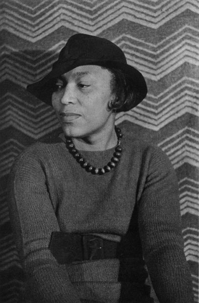

Zora Neale Hurston
Though there is some discrepancy about when she was born,
there is no question that Hurston is among the finest writers of the
modern era. Her work emphasizes the difficulties she faced in her life
and the struggles familiar not only to black Americans but to all
Americans.
